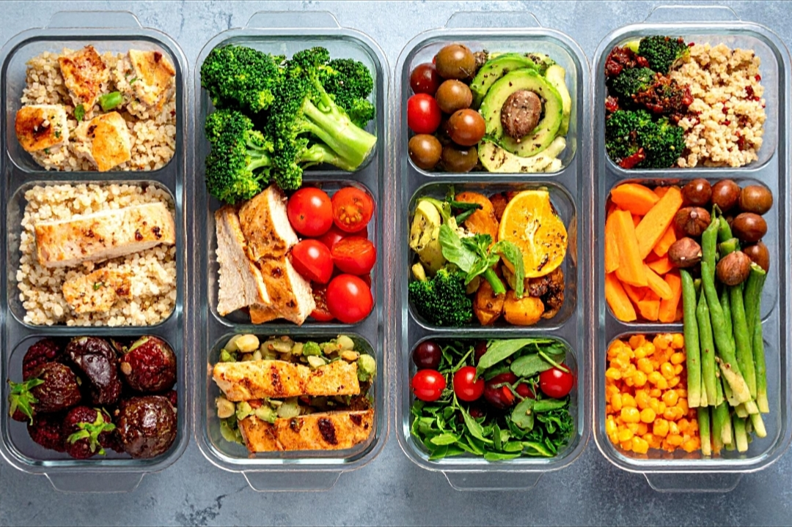
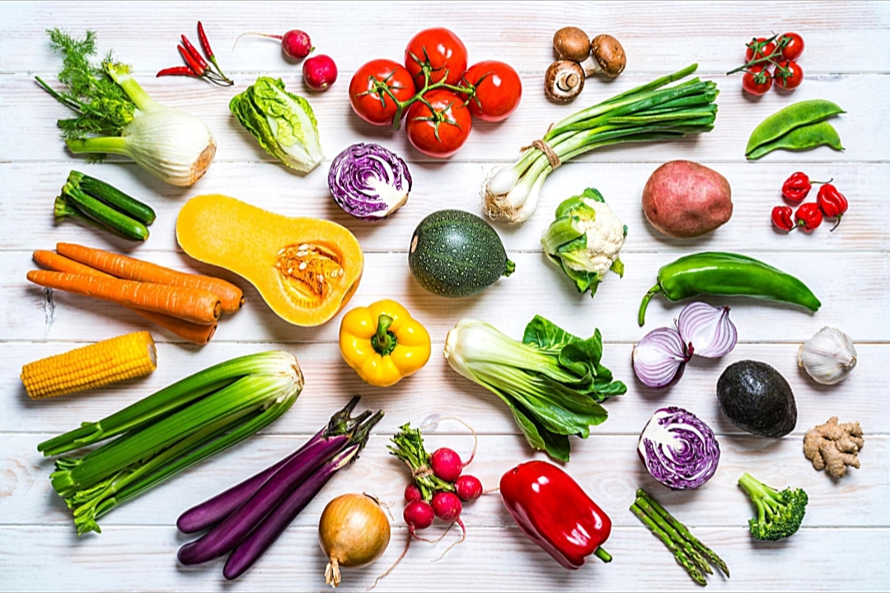

5 Small Habits That Change How You Eat
Big changes start small. Here are five habits you can build this week — from drinking more water to planning one meal ahead.
Student ID: 26224053

Big changes start small. Here are five habits you can build this week — from drinking more water to planning one meal ahead.

Different colors in vegetables and fruits often mean different nutrients. A colorful plate is a simple way to cover more of what your body needs.
You don't need expensive ingredients to eat well. Oats, beans, eggs, and seasonal vegetables go a long way.